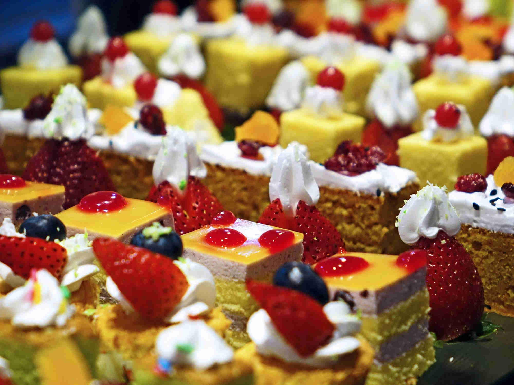
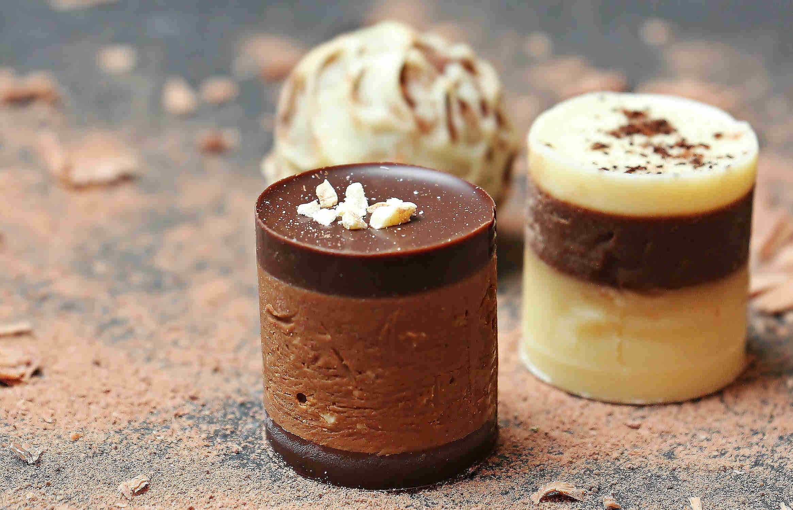

Non c’è miglior posto per passare un dolce momento, che sia a colazione che nel bel mezzo del pomeriggio, se non nella “Pasticceria Padovana”, il luogo perfetto per soddisfare le esigenze del vostro palato e vivere un’esperienza unica. Situata nel centro di Padova, dal 1946 la nostra pasticceria offre innumerevoli prodotti, dalle paste da gustare in loco alle torte pronte all’acquisto. È un’eccellenza riconosciuta nel territorio padovano e nazionale, in quanto produciamo prodotti classici e sperimentali che provengono dalle mani dei nostri pasticceri selezionati.
Alcuni dei prodotti seguono alla lettera le antiche ricette segrete del “Maestro”, una figura importantissima nella storia di “Pasticceria Padovana”, in quanto è riconosciuto come il fondatore. Innovare, con uno sguardo al passato: è in questo modo che offriamo al cliente il massimo della loro esperienza all’interno del nostro locale, assaporando gusti nuovi miscelati a quelli antichi.

Il nostro motto riprende un famosissimo ipse dixit di Leonardo Da Vinci:
La semplicità è la massima raffinatezza
. I nostri prodotti, sebbene abbiano una particolare preparazione ed elaborazione, sono realizzati con ingredienti semplici, certificati e sani, e per la loro raffinatezza seguiamo al dettaglio
tutte le procedure per realizzare un prodotto di qualità. Siamo noi a selezionare tutti gli ingredienti: non utilizziamo additivi chimici che potrebbero depauperare il prodotto stesso e rendere l’esperienza dei nostri clienti poco piacevole.